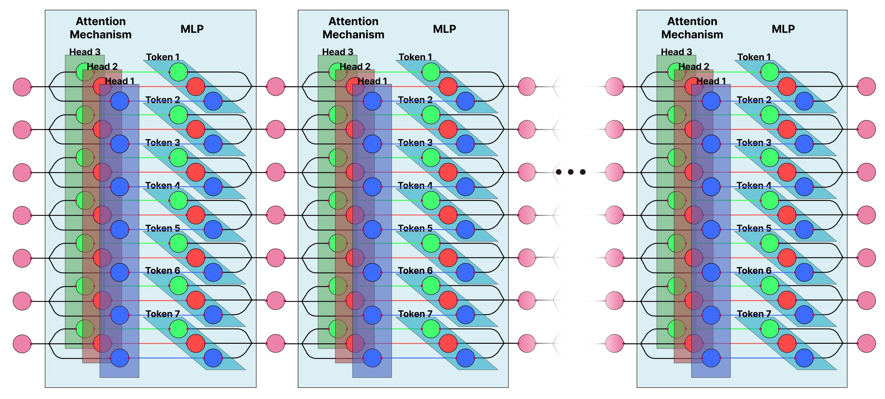
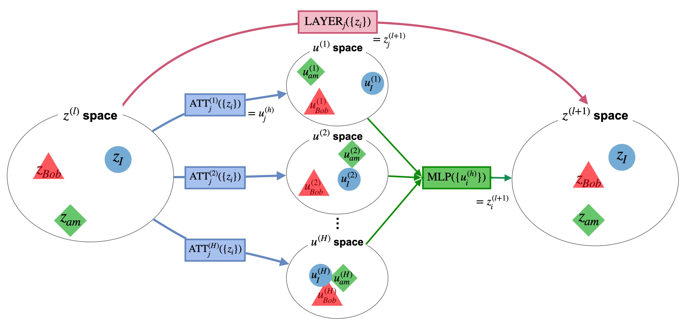
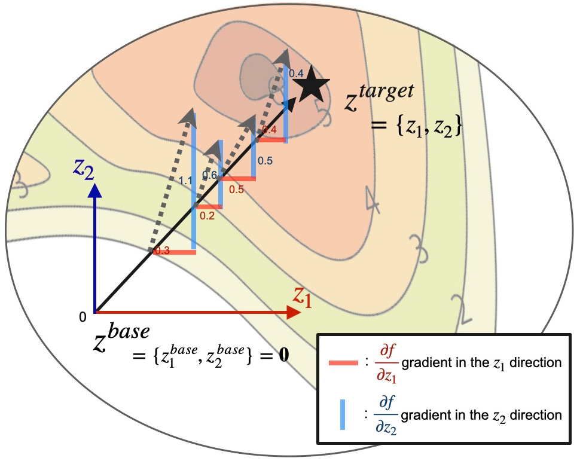

問題
Transformer の説明：層の中で何が起きているか？

- Attention map / Rollout [7, 5]：重みだけ
- ノルム分析 [6]：ATT/MLP を分けない
- AttnLRP [4]：演算ごとに規則が要る
- IG [1]：スカラー出力への帰属

Transformer の説明：層の中で何が起きているか？

LIG：Attention と MLP を別々に IG で測る。合成は層全体の寄与と一致するか？

集合対集合 IG を Multi-Head Attention（ATT）と MLP の境界でとる。規則は IG だけ、再学習は不要。
ATT：トークン→ヘッド · MLP：ヘッド→出力トークン
合成：ヘッドごとに ATT × MLP を掛け、ヘッドで和をとる（式）。
続き：② 仕組み · ④ 数値 · ③ 例
部分と層全体の出発点をそろえると、合成と層一括の差が最小になった。
実際には：Attention は対象トークンから、MLP はその始点での Attention 出力から出発させる（または両方ともゼロ）。
各参照ブロック内で最良、差は小さい。BERT-base・PTB 1,700 文（④）。帰属どうしの一致であり、モデルの振る舞いではない。残差経路は含まない。

先行研究IG [1] は、ベースライン $z(0)$ から入力 $z$ への直線経路 $z(a)=z(0)+a\,(z-z(0))$ に沿って勾配を積分する：
ベースラインは各寄与を何と比べて測るかを決める。
集合対集合 IG は、出力トークン $j$ の変化（$L_2$、⑤）を入力トークン（ATT）またはヘッド（MLP）に帰属させる。先行の IG 応用では標準的でない。
ベースライン＝出発点（$a=0$）。全入力がそろって実際の値へ動く（$a=1$）。
層一括 IG（ATT/MLP の分解なし）・Zero ベースライン・PTB の 1 文（定性的）。列：入力、行：出力、大きさ：|寄与|、赤：自分自身、青：他。この例では Layer 0 は対角付近、Layer 9–11 は文全体。

compositional gap（合成のずれ）：層一括と合成の帰属ベクトル（入力トークン上、文・層・出力トークンごと）の $L_2$ 距離。LRP 流の合成 [2, 3] はIG の連鎖律ではない（残差経路なし）ので、両者は一致するとは限らない。
設定：BERT-base-uncased · PTB dev 1,700 文 [9] · $m=32$ ステップ。参照ごとに上位 3 構成、太字が最良。比較はブロック内のみ。
| 参照（層一括） | 合成：ATT | MLP ベースライン | $L_2$ ↓ |
|---|---|---|---|
| ITBInput Token Base：全トークンが $z_j$ から出発 | ITB | ATTITBa=0 | 0.305 |
| ITB-zeroRatio | ATTITBa=0 | 0.312 | |
| ITB-mapRatio | ATTITBa=0 | 0.318 | |
| Zeroゼロベクトル $\mathbf{0}$ から出発 | Zero | Zero | 0.736 |
| ITB-zeroRatio | Zero | 0.744 | |
| Zero | ATTITBa=0 | 0.749 |
ITB-zeroRatio / -mapRatio：ITB で 0 になる自身のスコアを Zero ベースラインの自身スコア／attention 重み $\alpha_{j,j}$ で置き換え、総和は保つ。
最良の MLP ベースライン：ITB では ATTITBa=0（試したどの ATT ベースラインでも）、Zero では Zero。
入力トークンまたはヘッド $r$ ごとに次元について IG の和をとり、全体の変化で正規化（符号付き）：
| 手法 | 限界 / LIG の利点 |
|---|---|
| 先行研究Attention map [7]・Rollout [5] | value・MLP を見ない |
| 先行研究ノルム分析 [6] | ATT/MLP を分けない |
| 先行研究AttnLRP [4] | 演算ごとに規則が要る |
| 提案LIG | 規則は IG のみ。分けて合成し照合 |
[1] Sundararajan+ ICML 2017 · [2] Bach+ PLOS ONE 2015 · [3] Montavon+ LRP overview 2019 · [4] Achtibat+ (AttnLRP) ICML 2024 · [5] Abnar & Zuidema ACL 2020 · [6] Kobayashi+ EMNLP 2020 · [7] Jain & Wallace NAACL 2019 · [8] Sturmfels+ Distill 2020 · [9] Marcus+ Treebank-3, LDC 1999 · [10] Syed+ BlackboxNLP 2024 · [11] Hanna+ COLM 2024。本研究は JSPS 科研費 JP26K02989・JP26K23861・JP25K24611 の助成による。プロジェクトページ：https://eightsuzuki.github.io/layer-wise-integrated-gradients/